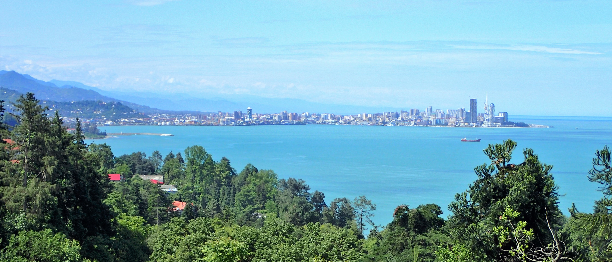
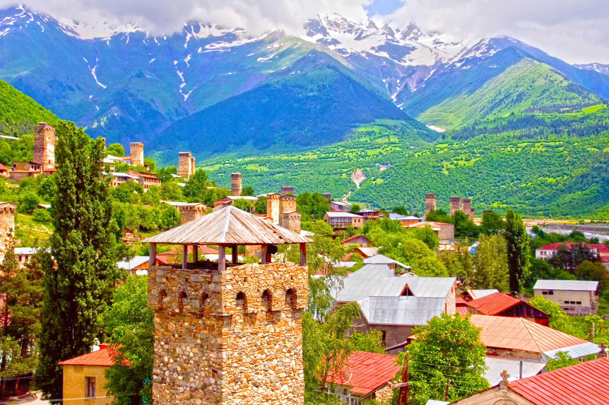
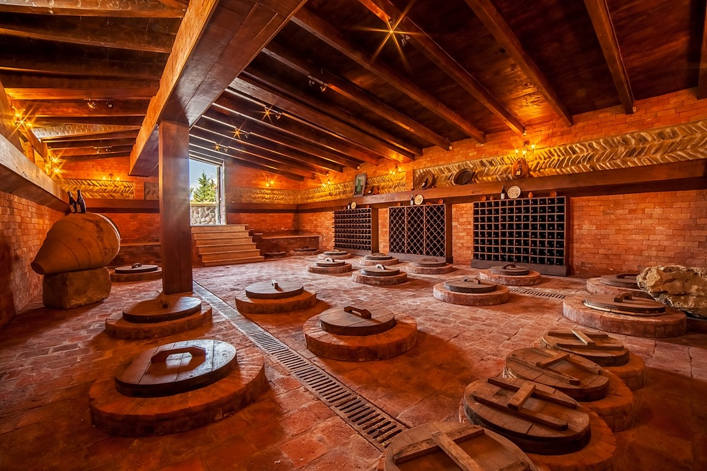
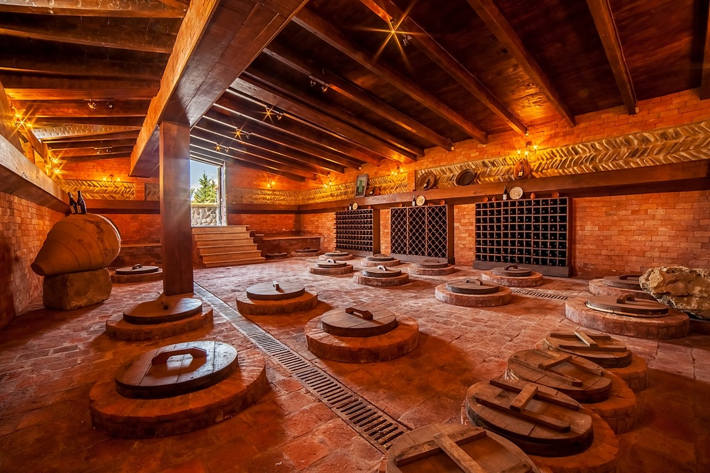
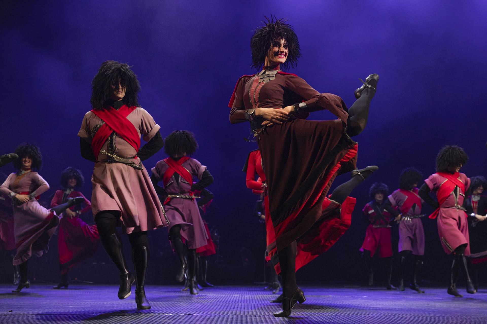

Georgien ist ein Land voller faszinierender Gegensätze: majestätische Berge, einladende Küsten, eine reiche kulinarische Tradition und eine unübertroffene Weinbautradition. Es ist ein Land, das seine Besucher mit seiner natürlichen Schönheit, seiner Gastfreundschaft und seiner kulturellen Tiefe verzaubert. Egal, ob du die Berge erkunden, an den Stränden entspannen oder die georgische Küche genießen möchtest – Georgien bietet für jeden etwas.
Tbilisi (auch Tiflis genannt) ist die Hauptstadt von Georgien und eine der faszinierendsten Städte des Kaukasus. Mit einer reichen Geschichte, einer atemberaubenden Lage und einer einzigartigen Mischung aus Tradition und Moderne ist Tiflis das kulturelle, politische und wirtschaftliche Zentrum des Landes.

Batumi ist eine lebendige und malerische Küstenstadt am Schwarzen Meer und die zweitgrößte Stadt Georgiens. Sie liegt im Westen des Landes, in der Region Adjara, und hat sich in den letzten Jahren zu einem beliebten Ziel für Touristen entwickelt. Die Stadt bietet eine perfekte Mischung aus historischer Architektur, moderner Entwicklung, natürlichen Schönheiten und einem angenehmen subtropischen Klima.
Swaneti (auch Swanetien) ist eine der faszinierendsten und unberührtesten Regionen in Georgien, die im nordwestlichen Teil des Landes liegt, eingebettet in den hohen Kaukasus. Sie ist bekannt für ihre beeindruckenden Berge, historischen Dörfer und einzigartige Kultur. Svaneti ist besonders für Naturliebhaber, Wanderer und Abenteuerreisende ein wahres Paradies.
Supra ist eine zentrale Tradition in Georgien und bezeichnet ein üppiges, festliches Mahl, das oft mit Familie, Freunden oder Gästen gefeiert wird. Es ist mehr als nur ein Essen – es ist eine Feier der Gastfreundschaft, des sozialen Zusammenhalts und der georgischen Kultur. Das georgische Supra ist ein Festmahl, bei dem nicht nur leckeres Essen serviert wird, sondern auch tiefgehende Gespräche, Musik und Geschichten Teil des Erlebnisses sind.


Georgischer Wein hat eine jahrtausendealte Tradition und ist weltweit für seine Vielfalt und Qualität bekannt. Georgien gilt als eines der ältesten Weinbaugebiete der Welt – der Ursprung des Weinbaus reicht hier mehr als 8.000 Jahre zurück. Die georgische Weinproduktion basiert auf einzigartigen Rebsorten und traditionellen Methoden, die in der Region über Generationen weitergegeben wurden. Wein spielt eine zentrale Rolle in der georgischen Kultur, und der Akt des Weintrinkens ist tief in der georgischen Gastfreundschaft und den sozialen Ritualen verwurzelt.
 

Das georgische Ballett hat sich aus den reichen traditionellen Tanzformen des Landes entwickelt und kombiniert klassische Ballettelemente mit georgischen Folkloretänzen. Es wird von einer besonderen, lebendigen und emotionalen Ausdruckskraft geprägt. Die georgischen Tänze sind bekannt für ihre akrobatischen Bewegungen, schnellen Fußarbeit und dramatischen Figuren.
Bitte, nehmen Sie so schnell wie möglich Urlaub und kommen Sie nach Georgien. Wir warten auf Sie!